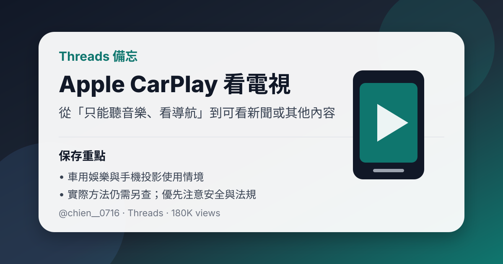

Threads｜Apple CarPlay 終於可以看電視：車用娛樂功能備忘

一句話摘要
Threads 使用者 @chien__0716 分享 Apple CarPlay 可以看電視了：原本只能聽音樂、看導航，現在可以看新聞或其他內容；此則先保存為「車用娛樂／手機投影」功能備忘，後續若要實作，需再確認方法、車機相容性與安全法規。
原貼重點
原文：
> Apple car play終於可以看電視了🥹
> 昨天學會的 本來只能聽音樂看導航
> 現在可以看新聞或其他🥹 太讚
可見互動資訊：Threads 顯示約 180K views，擷取時顯示 809 讚、187 回覆、95 轉貼、1.9K 分享／互動指標。
為什麼值得保存
- 屬於生活／車用科技情報：CarPlay 不再只是導航與音樂，也可能延伸到新聞、影音與車內等待時間的娛樂使用。
- 可作為未來查找「CarPlay 看影片／看電視／鏡像投影／車機盒」方案的線索。
- 使用者原貼沒有提供完整教學步驟，因此本筆先保存現象與需求，不直接視為已驗證教學。
後續查證方向
若要實際研究，可再查：
- iPhone 與車機是否支援對應方案。
- 是否需要第三方 CarPlay AI box、HDMI 轉接、瀏覽器 App、捷徑或鏡像工具。
- 是否只適用於停車狀態或特定車型。
- 音訊延遲、畫質、操作穩定性與資安風險。
- 台灣與所在地法規對行車中播放影音的限制。
安全提醒
行車中觀看影片、新聞或電視會造成駕駛分心，可能違反法規並提高事故風險。若要使用這類功能，應限於停車等待、充電休息、露營車內使用，或由乘客觀看；駕駛時仍應以導航與安全資訊為主。
原始連結
分享連結：
https://www.threads.com/share/BAds7xM5Oe/
Canonical：